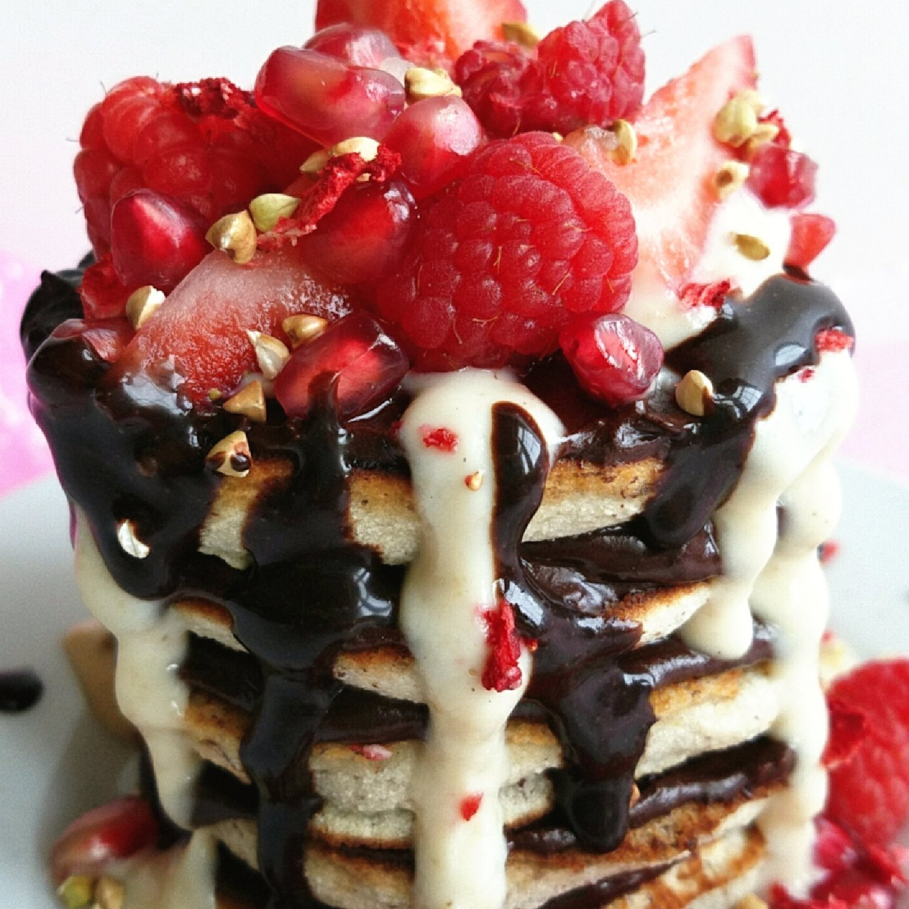
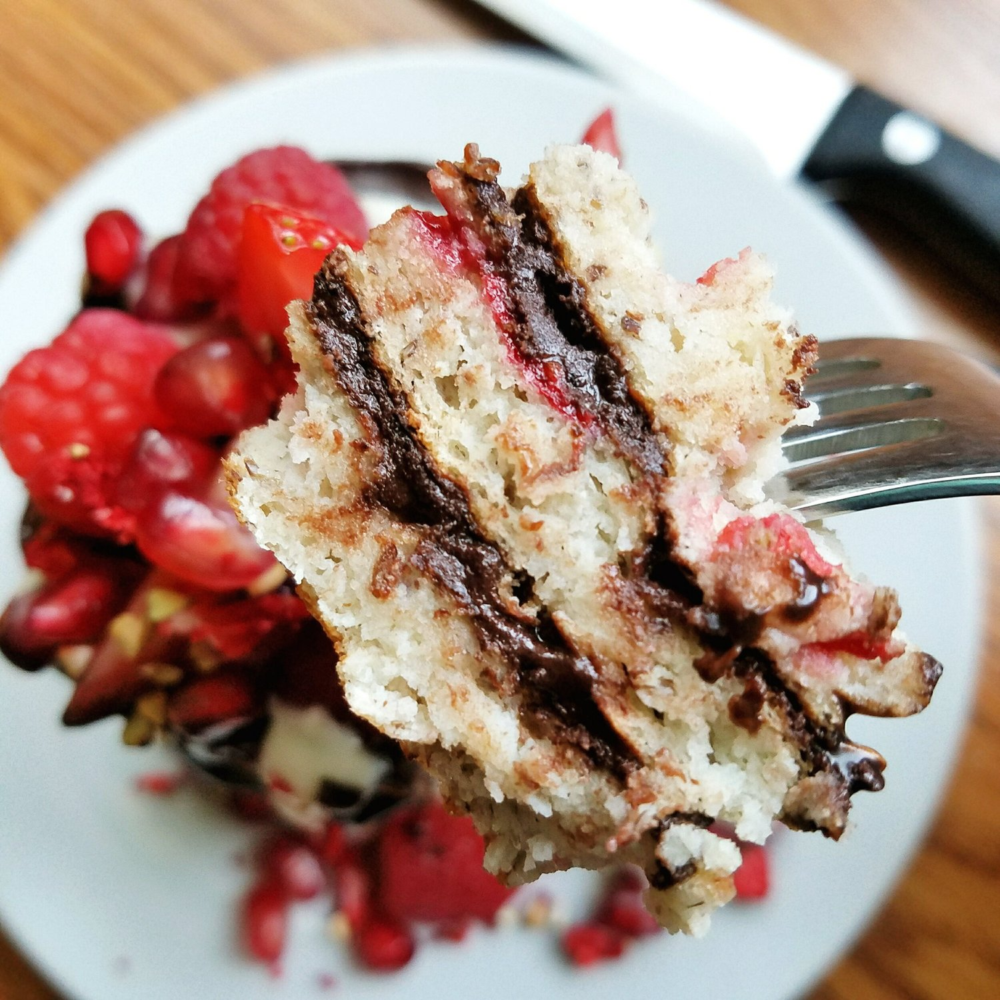
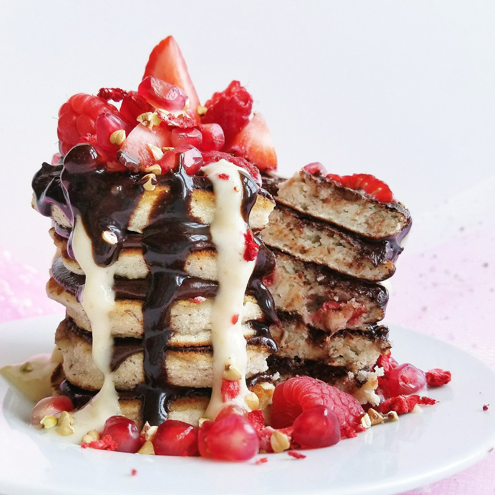

Vegan Berries and Cream Pancakes (gluten free)



Sending extra love your way with this stack of loving vegan berries and cream pancakes. This recipe is vegan, gluten free, and sugar free! The perfect morning wake-up call to get you out of bed at breakfast, or just a sweet treat at any meal of the day. I confess, I eat them for dessert a lot.
I kinda died with the first bite...and every bite after. The texture is unlike anything I think I can explain. It's moist, sweet, and very filling! Once you layer the pancakes, this stack truly is like a personal cake! I layered my berries & cream pancakes with a chocolate protein mousse that really augmented the cake & icing duo experience. To make the mousse, I mixed IMO syrup, unsweetened cocoa powder, and vanilla nuzest plant based protein. It could be made with maple syrup instead of IMO, and the protein powder makes it so icing-like!
The toppings are the most fun part though, right? I topped mine with a caramel peanut butter icing (sea salt caramel peanut butter made by Blind Spot Nut Butters mixed silk dairy free yogurt), chocolate stevia syrup, berries, pomegranate, and buckwheat groats for crunch. What would you put on top?! Options are endless, as long as it has that perfect ratio of icing, sweets, and crunch, you know? :p
I made these pancakes especially for mother's day, but they could be made for any average day! I made them for myself, and then I made my mom her favorite brunch meal. We thought we might go out to a movie or do something "mother's day-ish", but both of us were really tired, so we just sort of chilled out around the house. Brunch, presents, and relaxation. I tried to get my mom to not touch any chore or errand; that was certainly a struggle hahaha. Mom life, always wanting to do things. How did you spend time with your mother on Sunday?
Try out these vegan berries and cream pancakes for a pleasant treat. Not only are the pancakes vegan, but they are also gluten free and sugar free. You can have your (pan)cakes and eat them too. :)
Vegan Berries and Cream Pancakes
Serves: 1
-
2 TBSP coconut flour
-
2 TBSP buckwheat flour
-
1 TBSP ground flax seeds
-
1 tsp baking powder
-
1 stevia packet
-
2 TBSP freeze dried strawberries (or fresh!)
-
1/4 cup dairy free yogurt
-
1/3 cup unsweetened almond milk
Mix all of your ingredients. For the yogurt, my favorite brand is Silk. Once mixed, let sit 5-10 mins to thicken. Spray a large pan with nonstick spray and make 4-5 pancakes! Cook over a low/medium heat, flip once lightly browned and then lightly brown the other side.